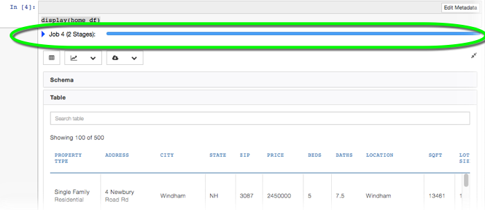
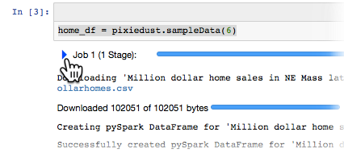
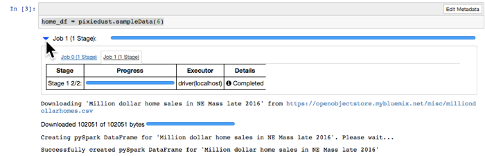

Spark Progress Monitor¶
When you run a Spark job within a Python or Scala notebook, you can’t see how the job is progressing. Wouldn’t it be nice to have a progress bar that shows you how your job is running and provides details? PixieDust includes a Spark Progress Monitor bar that lets you track the status of your Spark job. No more waiting in the dark. Notebook users can now see how a cell’s code is running behind the scenes.
To invoke the Spark progress monitor, run the following command in your Python notebook:
pixiedust.enableJobMonitor()
Doing so invokes the progress monitor for the session. Each time you run a Spark job after that, the monitor appears.
To see details, click the blue > carat:
and PixieDust shows you more information about the job:
